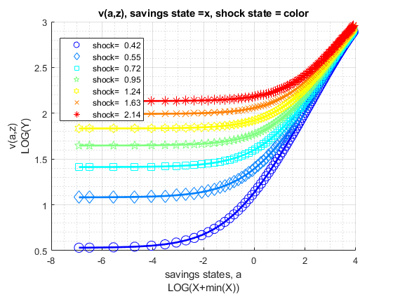
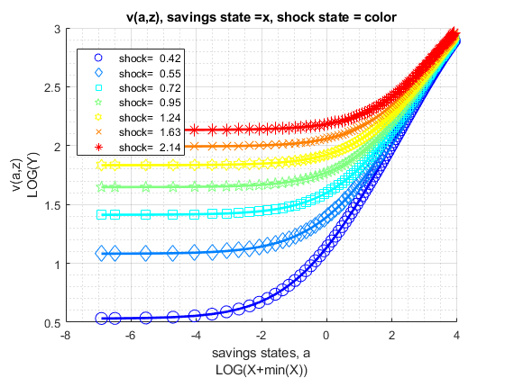

FF_VFI_AZ_MZOOM_VEC (vectorized zoom-in exact choice) Dynamic Savings Problem
Fast vectorized solution for solving the dynamic programming problem with fixed asset state space, but continuous asset choices. Solution obtained via bi(multi)-section. Solves for the fraction of resources to save, this is then translated to asset choice level
Uses first order conditions. The first order condition has two components: let u(c(ap,a,z)) be current utility, let beta*EV(ap|z) be the expected value from making choice ap given current shock z. d(u)/d(ap) is analytical; the EV(ap|z) are a set of linear splines each spline for each shock point z, dEV/d(ap) are just the slopes for each spline segment. With both partials, we can easily use mzoomtion to solve for optimal exact choices.
Obtains policy and value functions. Shock is AR(1). This function is looped, and extremely slow when state-space increases in size. This function is useful as a working template for developing models that rely on asset and shocks.
* MP_PARAMS controls model preference, prices, shock and asset grid parameters. * MP_SUPPORT controls convergence criterion, printing and summary controls
mp_params = containers.Map('KeyType','char', 'ValueType','any');
mp_params('fl_crra') = 1.5;
mp_params('fl_beta') = 0.95;
mp_params('fl_w') = 1.05;
mp_params('fl_r') = 0.03;
mp_params('fl_a_min') = 0;
mp_params('fl_a_max') = 50;
mp_params('it_a_n') = 25;
mp_params('st_grid_type') = 'grid_powerspace';
mp_params('fl_z_persist') = 0.60;
mp_params('fl_shk_std') = 0.10;
mp_params('it_z_n') = 5;
mp_params('st_grid_type') = 'grid_powerspace'; mp_support = containers.Map('KeyType','char', 'ValueType','any');
mp_support('fl_lowestc') = -10e10;
mp_support('it_maxiter_val') = 500;
mp_support('fl_tol_val') = 10e-5;
% printer various information
mp_support('bl_timer') = true;
mp_support('bl_print_params') = false;
mp_support('bl_print_iterinfo') = false;
% These names must match keys of mp_solu: v=value, ap=savings choice,
c=consumption, y=income, coh=cash-on-hand (income + savings),
savefraccoh = ap/coh.
% what outcomes to store in the mp_solu for export
mp_support('ls_slout') = {'v', 'ap', 'c', 'y', 'coh', 'savefraccoh'};
% outcome for ff_container_map_display
mp_support('ls_ffcmd') = {'v', 'ap', 'c', 'y', 'coh', 'savefraccoh'};
% outcome for ff_summ_nd_array
mp_support('ls_ffsna') = {'v', 'ap', 'c', 'y', 'coh', 'savefraccoh'};
% outcome for ff_graph_grid
mp_support('ls_ffgrh') = {'v', 'ap', 'c', 'y', 'coh', 'savefraccoh'};
% outcome for ff_summ_nd_array
mp_support('ffsna_opt_it_row_n_keep') = 10;
% outcome for ff_summ_nd_array
mp_support('ffsna_opt_it_col_n_keep') = 9;[MP_VALPOL_OUT, FLAG] = FF_VFI_AZ_MZOOM_VEC() default savings and shock model simulation
[MP_VALPOL_OUT, FLAG] = FF_VFI_AZ_MZOOM_VEC(MP_PARAMS) change model parameters through MP_PARAMS
[MP_VALPOL_OUT, FLAG] = FF_VFI_AZ_MZOOM_VEC(MP_PARAMS, MP_SUPPORT) change various printing, storaging, graphing, convergence etc controls through MP_SUPPORT
[MP_VALPOL_OUT, FLAG] = FF_VFI_AZ_MZOOM_VEC(MP_PARAMS, MP_SUPPORT, MP_SUPPORT_GRAPH) also changing graphing options, see the FF_GRAPH_GRID function for what key value paris can be specified.
see also FX_VFI_AZ_MZOOM_VEC, FF_VFI_AZ_MZOOM_LOOP, FF_VFI_AZ_LOOP, FF_VFI_AZ_VEC, FF_GRAPH_GRID
Contents
- Set Default and Parse Inputs
- Default Model Parameters
- Parse mp_params
- Generate A and Z Grids
- mp_mzoom_ctrlinfo Parameters
- Default Support Parameters
- Whether Additional Outcomes Should be Stored
- Initialize Matrix
- Define Functions
- Compute Fixed Resource Matrix by States
- Dynamically Solve
- Convergence Results
- Results for Printing, and Graphing
- Print Parameter Information
- Show Value Function Convergence Information
- ls_ffcmd summary
- ls_ffsna summarize full
- ls_ffgrh graph
- Store Results for Output
function [mp_valpol_out, flag] = ff_vfi_az_mzoom_vec(varargin)
Set Default and Parse Inputs
if (~isempty(varargin)) if (length(varargin) == 1) [mp_params_ext] = varargin{:}; elseif (length(varargin) == 2) [mp_params_ext, mp_support_ext] = varargin{:}; end else close all; mp_support_ext = containers.Map('KeyType','char', 'ValueType','any'); mp_support_ext('bl_timer') = true; mp_support_ext('bl_print_params') = true; mp_support_ext('bl_print_iterinfo') = true; mp_support_ext('ls_ffcmd') = {'v', 'ap', 'c', 'y', 'coh', 'savefraccoh'}; mp_support_ext('ls_ffsna') = {'ap'}; mp_support_ext('ls_ffgrh') = {'v', 'ap', 'c', 'y', 'savefraccoh'}; mp_support_ext('ls_store') = {'v', 'ap', 'c', 'y', 'coh'}; mp_support_ext('ffsna_opt_it_row_n_keep') = 10; mp_support_ext('ffsna_opt_it_col_n_keep') = 9; end
Default Model Parameters
support_map
mp_params = containers.Map('KeyType','char', 'ValueType','any'); mp_params('fl_crra') = 1.5; mp_params('fl_beta') = 0.94; mp_params('fl_w') = 1.28; mp_params('fl_r') = 0.025; mp_params('fl_a_min') = 0; mp_params('fl_a_max') = 50; mp_params('it_a_n') = 100; mp_params('st_grid_type') = 'grid_linspace'; mp_params('fl_z_persist') = 0.80; mp_params('fl_shk_std') = 0.20; mp_params('it_z_n') = 7; % override default support_map values if (length(varargin)>=1) mp_params = [mp_params; mp_params_ext]; end
Parse mp_params
params_group = values(mp_params, {'fl_crra', 'fl_beta'});
[fl_crra, fl_beta] = params_group{:};
params_group = values(mp_params, {'fl_w', 'fl_r'});
[fl_w, fl_r] = params_group{:};
params_group = values(mp_params, {'fl_a_min', 'fl_a_max', 'it_a_n', 'st_grid_type'});
[fl_a_min, fl_a_max, it_a_n, st_grid_type] = params_group{:};
params_group = values(mp_params, {'fl_z_persist', 'fl_shk_std', 'it_z_n'});
[fl_z_persist, fl_shk_std, it_z_n] = params_group{:};
Generate A and Z Grids
Same min and max and grid points
[ar_a] = ff_saveborr_grid(fl_a_min, fl_a_max, it_a_n, st_grid_type); ar_a = ar_a'; % shock vector and transition, normalize mean exp(shk) to 1 [ar_z, mt_z_trans] = ffy_rouwenhorst(fl_z_persist, fl_shk_std, it_z_n); ar_z = exp(ar_z'); % normalize mean of exp to 1, fl_shk_std does not shift mean. ar_z_stationary = mt_z_trans^1000; ar_z_stationary = ar_z_stationary(1,:); fl_labor_agg = ar_z_stationary*exp(ar_z'); ar_z = exp(ar_z)/fl_labor_agg;
mp_mzoom_ctrlinfo Parameters
support_map
mp_mzoom_ctrlinfo = containers.Map('KeyType','char', 'ValueType','any'); % number of a*z points to concurrently evaluate mp_mzoom_ctrlinfo('it_states_n') = it_z_n*it_a_n; % within each multisection iteration, points to solve at mp_mzoom_ctrlinfo('it_mzoom_jnt_pnts') = 50; % number of iterations mp_mzoom_ctrlinfo('it_mzoom_max_iter') = 3; % zoom ratio mp_mzoom_ctrlinfo('it_mzoom_zm_ratio') = 0; % starting savings share, common for all mp_mzoom_ctrlinfo('fl_x_left_start') = 10e-6; % max savings share, common for all mp_mzoom_ctrlinfo('fl_x_right_start') = 1-10e-6;
Default Support Parameters
support_map
mp_support = containers.Map('KeyType','char', 'ValueType','any'); % Model Control mp_support('fl_lowestc') = -10e10; % Iteration Control mp_support('it_maxiter_val') = 500; mp_support('fl_tol_val') = 10e-5; % printer various information mp_support('bl_timer') = true; mp_support('bl_print_params') = false; mp_support('bl_print_iterinfo') = false; % These names must match keys of mp_solu: % what outcomes to store in the mp_solu for export mp_support('ls_slout') = {'v', 'ap', 'c', 'y', 'coh', 'savefraccoh'}; % outcome for ff_container_map_display mp_support('ls_ffcmd') = {'ap'}; % outcome for ff_summ_nd_array mp_support('ls_ffsna') = {}; % outcome for ff_graph_grid mp_support('ls_ffgrh') = {}; % outcome for ff_summ_nd_array mp_support('ffsna_opt_it_row_n_keep') = 10; % outcome for ff_summ_nd_array mp_support('ffsna_opt_it_col_n_keep') = 9; % add zoom controls to mp_support mp_support = [mp_support; mp_mzoom_ctrlinfo]; % override default support_map values if (length(varargin)>=2 || isempty(varargin)) mp_support = [mp_support; mp_support_ext]; end % Parse mp_support params_group = values(mp_support, {'it_mzoom_jnt_pnts'}); [it_mzoom_jnt_pnts] = params_group{:}; params_group = values(mp_support, {'fl_lowestc'}); [fl_lowestc] = params_group{:}; params_group = values(mp_support, {'it_maxiter_val', 'fl_tol_val'}); [it_maxiter_val, fl_tol_val] = params_group{:}; params_group = values(mp_support, {'bl_timer', 'bl_print_params', 'bl_print_iterinfo'}); [bl_timer, bl_print_params, bl_print_iterinfo] = params_group{:}; params_group = values(mp_support, ... {'ls_slout', 'ls_ffcmd', 'ls_ffsna', 'ls_ffgrh',... 'ffsna_opt_it_row_n_keep', 'ffsna_opt_it_col_n_keep'}); [ls_slout, ls_ffcmd, ls_ffsna, ls_ffgrh,... ffsna_opt_it_row_n_keep, ffsna_opt_it_col_n_keep] = params_group{:};
Whether Additional Outcomes Should be Stored
when state space are large, might not be a good idea to store all possible model output matrixes, but could be controlled with these if things should be outputed. If bl_store_more = true, will output store all additional possible outcomes if bl_vfi_store_all = true. Internally, which output becomes tabular or graphical controled by ls_ffcmd, ls_ffsna, and ls_ffgrh.
% If to store additional outcomes cl_more = {'c', 'y'}; ar_find_slout = cell2mat(cellfun(@(m) find(strcmp(ls_slout, m)), cl_more, 'UniformOutput', false)); ar_find_ffcmd = cell2mat(cellfun(@(m) find(strcmp(ls_ffcmd, m)), cl_more, 'UniformOutput', false)); ar_find_ffsna = cell2mat(cellfun(@(m) find(strcmp(ls_ffsna, m)), cl_more, 'UniformOutput', false)); ar_find_ffgrh = cell2mat(cellfun(@(m) find(strcmp(ls_ffgrh, m)), cl_more, 'UniformOutput', false)); if (length(ar_find_slout) + length(ar_find_ffcmd) + length(ar_find_ffsna) + length(ar_find_ffgrh) >1) bl_store_more = true; end
Initialize Matrix
mt_val_lst = zeros(length(ar_a),length(ar_z)); mt_val_cur = mt_val_lst; mt_aprime_lst = zeros(length(ar_a),length(ar_z)); mt_aprime_cur = mt_aprime_lst; mt_aprime_idx = zeros(length(ar_a),length(ar_z)); ar_val_diff_norm = zeros([it_maxiter_val, 1]); ar_pol_diff_norm = zeros([it_maxiter_val, 1]); mt_pol_perc_change = zeros([it_maxiter_val, length(ar_z)]); if (bl_store_more) mt_c = zeros(length(ar_a),length(ar_z)); mt_y = zeros(length(ar_a),length(ar_z)); mt_coh = zeros(length(ar_a),length(ar_z)); end
Define Functions
% Current Function and their Derivatives if(fl_crra == 1) f_util = @(c) log(c); f_du_da = @(c) -1./(c); else f_util = @(c) (((c).^(1-fl_crra)-1)./(1-fl_crra)); f_du_da = @(c) -1./(c.^fl_crra); end % Utility f_U = @(u, Ev) (u + fl_beta.*Ev); f_FOC = @(duda, devda) (duda + fl_beta.*devda); % resources f_y = @(z, b) (z*fl_w + b.*(fl_r)); f_coh = @(z, b) (z*fl_w + b.*(1+fl_r)); f_cons = @(z, b, bprime) (f_coh(z, b) - bprime);
Compute Fixed Resource Matrix by States
% C1. Resource Matrix Broadcast: length(ar_a) by length(ar_z) matrix mt_resources = f_coh(ar_z, ar_a'); mt_z_ctr = repmat(1:length(ar_z), [length(ar_a), 1]); % C2. Flatten the resource matrix, amz = a mesh z: ar_resources_amz = mt_resources(:); ar_z_ctr_amz = mt_z_ctr(:); % z needs to be meshed with percentage choices, smz=states mesh z mt_z_ctr_amz_smz = repmat(ar_z_ctr_amz, [1, it_mzoom_jnt_pnts]); ar_z_ctr_amz_smz = mt_z_ctr_amz_smz(:);
Dynamically Solve
if (bl_timer) tic end % initialize fl_diff = 1; it_iter = 0; % After converge, one more iteration to store results bl_continue = true; bl_converged = false; % Loop 0, continuous VFI iteration until convergence while bl_continue % A. Solve For EV(ap,z) = EV(ap,zp|z)f(zp|z) for all possible ap points % Note that EV(ap,z) is unrelated to current asset state a mt_ev_ap_z = zeros(length(ar_a), length(ar_z)); for it_z_ctr = 1:length(ar_z) for it_ap_ctr = 1:length(ar_a) % Add to each cell of mt_ev_ap_z, integrating over f(zp|z) for it_zprime_ctr = 1:length(ar_z) mt_ev_ap_z(it_ap_ctr, it_z_ctr) = mt_ev_ap_z(it_ap_ctr, it_z_ctr) ... + mt_z_trans(it_z_ctr,it_zprime_ctr)*mt_val_lst(it_ap_ctr,it_zprime_ctr); end end end % B. z specific EV Slope: EV(ap,z)/d(ap) % Given the discretized EV matrix structure, we have a matrix of % splines, get the slopes of the spline segments. These are the % derivatives of the marginal effects of additional savings for each % splinde segment conditional on shock. mt_deri_dev_dap = diff(mt_ev_ap_z)./diff(ar_a'); % C. Generate Vectorized FOC Evaluator % x = fl_aprime_frac fc_ffi_vec_u_v_ap = @(x) ffi_vec_u_v_ap(... x, ar_a, ... ar_resources_amz, ar_z_ctr_amz_smz, mt_ev_ap_z, mt_deri_dev_dap, ... f_util, f_U); % D. Solve via Bisection [ar_opti_saveborr_frac_amz] = ... ff_optim_mzoom_savezrone(fc_ffi_vec_u_v_ap, false, false, mp_support); % F. Evaluate [ar_val_opti_amz, ar_aprime_amz, ar_c_opti_amz] = ffi_vec_u_v_ap(... ar_opti_saveborr_frac_amz, ar_a, ... ar_resources_amz, ar_z_ctr_amz, ... mt_ev_ap_z, mt_deri_dev_dap, ... f_util, f_U); % G. Record Results mt_val_cur = reshape(ar_val_opti_amz, [length(ar_a),length(ar_z)]); mt_aprime_cur = reshape(ar_aprime_amz, [length(ar_a),length(ar_z)]); % H. Save Additional Results if bl_converged [~, ar_opti_a_idx_amz] = min(abs(ar_a-ar_aprime_amz),[],2); mt_aprime_idx = reshape(ar_opti_a_idx_amz, [length(ar_a),length(ar_z)]); if (bl_store_more) mt_c = reshape(ar_c_opti_amz, [length(ar_a),length(ar_z)]); mt_y = mt_resources - ar_a'; mt_coh = mt_resources; end end % I. Iteration Convergence Checking % Continuation Conditions: it_iter = it_iter + 1; fl_diff = norm(mt_val_cur-mt_val_lst); diff_pol = norm(mt_aprime_cur-mt_aprime_lst); % Difference across iterations if (bl_print_iterinfo) ar_val_diff_norm(it_iter) = fl_diff; ar_pol_diff_norm(it_iter) = diff_pol; mt_pol_perc_change(it_iter, :) = sum((mt_aprime_cur ~= mt_aprime_lst))/(length(ar_a)); end % Update mt_val_lst = mt_val_cur; mt_aprime_lst = mt_aprime_cur; % Update Continue Criterion if bl_converged bl_continue = false; elseif(fl_diff <= fl_tol_val || it_iter >= it_maxiter_val) bl_converged = true; end % J. Print Iteration Record if(bl_print_iterinfo) disp(['ff_vfi_az_mzoom_loop, it_iter:' num2str(it_iter) ... ', fl_diff:' num2str(fl_diff)]); end end
ff_vfi_az_mzoom_loop, it_iter:1, fl_diff:40.8356 ff_vfi_az_mzoom_loop, it_iter:2, fl_diff:31.0727 ff_vfi_az_mzoom_loop, it_iter:3, fl_diff:25.5344 ff_vfi_az_mzoom_loop, it_iter:4, fl_diff:21.5436 ff_vfi_az_mzoom_loop, it_iter:5, fl_diff:18.4544 ff_vfi_az_mzoom_loop, it_iter:6, fl_diff:15.9712 ff_vfi_az_mzoom_loop, it_iter:7, fl_diff:13.9266 ff_vfi_az_mzoom_loop, it_iter:8, fl_diff:12.2145 ff_vfi_az_mzoom_loop, it_iter:9, fl_diff:10.7628 ff_vfi_az_mzoom_loop, it_iter:10, fl_diff:9.5197 ff_vfi_az_mzoom_loop, it_iter:11, fl_diff:8.4469 ff_vfi_az_mzoom_loop, it_iter:12, fl_diff:7.515 ff_vfi_az_mzoom_loop, it_iter:13, fl_diff:6.7014 ff_vfi_az_mzoom_loop, it_iter:14, fl_diff:5.9878 ff_vfi_az_mzoom_loop, it_iter:15, fl_diff:5.3594 ff_vfi_az_mzoom_loop, it_iter:16, fl_diff:4.8045 ff_vfi_az_mzoom_loop, it_iter:17, fl_diff:4.313 ff_vfi_az_mzoom_loop, it_iter:18, fl_diff:3.8766 ff_vfi_az_mzoom_loop, it_iter:19, fl_diff:3.4885 ff_vfi_az_mzoom_loop, it_iter:20, fl_diff:3.1425 ff_vfi_az_mzoom_loop, it_iter:21, fl_diff:2.8337 ff_vfi_az_mzoom_loop, it_iter:22, fl_diff:2.5577 ff_vfi_az_mzoom_loop, it_iter:23, fl_diff:2.3107 ff_vfi_az_mzoom_loop, it_iter:24, fl_diff:2.0894 ff_vfi_az_mzoom_loop, it_iter:25, fl_diff:1.8911 ff_vfi_az_mzoom_loop, it_iter:26, fl_diff:1.7132 ff_vfi_az_mzoom_loop, it_iter:27, fl_diff:1.5534 ff_vfi_az_mzoom_loop, it_iter:28, fl_diff:1.4098 ff_vfi_az_mzoom_loop, it_iter:29, fl_diff:1.2808 ff_vfi_az_mzoom_loop, it_iter:30, fl_diff:1.1647 ff_vfi_az_mzoom_loop, it_iter:31, fl_diff:1.0603 ff_vfi_az_mzoom_loop, it_iter:32, fl_diff:0.96632 ff_vfi_az_mzoom_loop, it_iter:33, fl_diff:0.8817 ff_vfi_az_mzoom_loop, it_iter:34, fl_diff:0.80546 ff_vfi_az_mzoom_loop, it_iter:35, fl_diff:0.73673 ff_vfi_az_mzoom_loop, it_iter:36, fl_diff:0.67472 ff_vfi_az_mzoom_loop, it_iter:37, fl_diff:0.61876 ff_vfi_az_mzoom_loop, it_iter:38, fl_diff:0.56822 ff_vfi_az_mzoom_loop, it_iter:39, fl_diff:0.52255 ff_vfi_az_mzoom_loop, it_iter:40, fl_diff:0.48125 ff_vfi_az_mzoom_loop, it_iter:41, fl_diff:0.44384 ff_vfi_az_mzoom_loop, it_iter:42, fl_diff:0.40991 ff_vfi_az_mzoom_loop, it_iter:43, fl_diff:0.3791 ff_vfi_az_mzoom_loop, it_iter:44, fl_diff:0.35107 ff_vfi_az_mzoom_loop, it_iter:45, fl_diff:0.32552 ff_vfi_az_mzoom_loop, it_iter:46, fl_diff:0.30219 ff_vfi_az_mzoom_loop, it_iter:47, fl_diff:0.28084 ff_vfi_az_mzoom_loop, it_iter:48, fl_diff:0.26127 ff_vfi_az_mzoom_loop, it_iter:49, fl_diff:0.2433 ff_vfi_az_mzoom_loop, it_iter:50, fl_diff:0.22677 ff_vfi_az_mzoom_loop, it_iter:51, fl_diff:0.21154 ff_vfi_az_mzoom_loop, it_iter:52, fl_diff:0.19747 ff_vfi_az_mzoom_loop, it_iter:53, fl_diff:0.18447 ff_vfi_az_mzoom_loop, it_iter:54, fl_diff:0.17243 ff_vfi_az_mzoom_loop, it_iter:55, fl_diff:0.16127 ff_vfi_az_mzoom_loop, it_iter:56, fl_diff:0.15091 ff_vfi_az_mzoom_loop, it_iter:57, fl_diff:0.14128 ff_vfi_az_mzoom_loop, it_iter:58, fl_diff:0.13232 ff_vfi_az_mzoom_loop, it_iter:59, fl_diff:0.12397 ff_vfi_az_mzoom_loop, it_iter:60, fl_diff:0.11619 ff_vfi_az_mzoom_loop, it_iter:61, fl_diff:0.10893 ff_vfi_az_mzoom_loop, it_iter:62, fl_diff:0.10215 ff_vfi_az_mzoom_loop, it_iter:63, fl_diff:0.095823 ff_vfi_az_mzoom_loop, it_iter:64, fl_diff:0.089904 ff_vfi_az_mzoom_loop, it_iter:65, fl_diff:0.084369 ff_vfi_az_mzoom_loop, it_iter:66, fl_diff:0.079187 ff_vfi_az_mzoom_loop, it_iter:67, fl_diff:0.074336 ff_vfi_az_mzoom_loop, it_iter:68, fl_diff:0.069791 ff_vfi_az_mzoom_loop, it_iter:69, fl_diff:0.065532 ff_vfi_az_mzoom_loop, it_iter:70, fl_diff:0.061541 ff_vfi_az_mzoom_loop, it_iter:71, fl_diff:0.057799 ff_vfi_az_mzoom_loop, it_iter:72, fl_diff:0.054289 ff_vfi_az_mzoom_loop, it_iter:73, fl_diff:0.050997 ff_vfi_az_mzoom_loop, it_iter:74, fl_diff:0.047908 ff_vfi_az_mzoom_loop, it_iter:75, fl_diff:0.045009 ff_vfi_az_mzoom_loop, it_iter:76, fl_diff:0.042288 ff_vfi_az_mzoom_loop, it_iter:77, fl_diff:0.039733 ff_vfi_az_mzoom_loop, it_iter:78, fl_diff:0.037335 ff_vfi_az_mzoom_loop, it_iter:79, fl_diff:0.035083 ff_vfi_az_mzoom_loop, it_iter:80, fl_diff:0.032968 ff_vfi_az_mzoom_loop, it_iter:81, fl_diff:0.030981 ff_vfi_az_mzoom_loop, it_iter:82, fl_diff:0.029115 ff_vfi_az_mzoom_loop, it_iter:83, fl_diff:0.027363 ff_vfi_az_mzoom_loop, it_iter:84, fl_diff:0.025716 ff_vfi_az_mzoom_loop, it_iter:85, fl_diff:0.024169 ff_vfi_az_mzoom_loop, it_iter:86, fl_diff:0.022715 ff_vfi_az_mzoom_loop, it_iter:87, fl_diff:0.021349 ff_vfi_az_mzoom_loop, it_iter:88, fl_diff:0.020065 ff_vfi_az_mzoom_loop, it_iter:89, fl_diff:0.018859 ff_vfi_az_mzoom_loop, it_iter:90, fl_diff:0.017726 ff_vfi_az_mzoom_loop, it_iter:91, fl_diff:0.016661 ff_vfi_az_mzoom_loop, it_iter:92, fl_diff:0.015661 ff_vfi_az_mzoom_loop, it_iter:93, fl_diff:0.01472 ff_vfi_az_mzoom_loop, it_iter:94, fl_diff:0.013836 ff_vfi_az_mzoom_loop, it_iter:95, fl_diff:0.013005 ff_vfi_az_mzoom_loop, it_iter:96, fl_diff:0.012224 ff_vfi_az_mzoom_loop, it_iter:97, fl_diff:0.01149 ff_vfi_az_mzoom_loop, it_iter:98, fl_diff:0.0108 ff_vfi_az_mzoom_loop, it_iter:99, fl_diff:0.010151 ff_vfi_az_mzoom_loop, it_iter:100, fl_diff:0.0095421 ff_vfi_az_mzoom_loop, it_iter:101, fl_diff:0.0089693 ff_vfi_az_mzoom_loop, it_iter:102, fl_diff:0.0084309 ff_vfi_az_mzoom_loop, it_iter:103, fl_diff:0.0079249 ff_vfi_az_mzoom_loop, it_iter:104, fl_diff:0.0074493 ff_vfi_az_mzoom_loop, it_iter:105, fl_diff:0.0070022 ff_vfi_az_mzoom_loop, it_iter:106, fl_diff:0.0065819 ff_vfi_az_mzoom_loop, it_iter:107, fl_diff:0.0061869 ff_vfi_az_mzoom_loop, it_iter:108, fl_diff:0.0058157 ff_vfi_az_mzoom_loop, it_iter:109, fl_diff:0.0054667 ff_vfi_az_mzoom_loop, it_iter:110, fl_diff:0.0051386 ff_vfi_az_mzoom_loop, it_iter:111, fl_diff:0.0048302 ff_vfi_az_mzoom_loop, it_iter:112, fl_diff:0.0045404 ff_vfi_az_mzoom_loop, it_iter:113, fl_diff:0.0042679 ff_vfi_az_mzoom_loop, it_iter:114, fl_diff:0.0040118 ff_vfi_az_mzoom_loop, it_iter:115, fl_diff:0.0037711 ff_vfi_az_mzoom_loop, it_iter:116, fl_diff:0.0035448 ff_vfi_az_mzoom_loop, it_iter:117, fl_diff:0.0033321 ff_vfi_az_mzoom_loop, it_iter:118, fl_diff:0.0031322 ff_vfi_az_mzoom_loop, it_iter:119, fl_diff:0.0029442 ff_vfi_az_mzoom_loop, it_iter:120, fl_diff:0.0027676 ff_vfi_az_mzoom_loop, it_iter:121, fl_diff:0.0026015 ff_vfi_az_mzoom_loop, it_iter:122, fl_diff:0.0024454 ff_vfi_az_mzoom_loop, it_iter:123, fl_diff:0.0022987 ff_vfi_az_mzoom_loop, it_iter:124, fl_diff:0.0021608 ff_vfi_az_mzoom_loop, it_iter:125, fl_diff:0.0020311 ff_vfi_az_mzoom_loop, it_iter:126, fl_diff:0.0019092 ff_vfi_az_mzoom_loop, it_iter:127, fl_diff:0.0017947 ff_vfi_az_mzoom_loop, it_iter:128, fl_diff:0.001687 ff_vfi_az_mzoom_loop, it_iter:129, fl_diff:0.0015858 ff_vfi_az_mzoom_loop, it_iter:130, fl_diff:0.0014906 ff_vfi_az_mzoom_loop, it_iter:131, fl_diff:0.0014012 ff_vfi_az_mzoom_loop, it_iter:132, fl_diff:0.0013171 ff_vfi_az_mzoom_loop, it_iter:133, fl_diff:0.0012381 ff_vfi_az_mzoom_loop, it_iter:134, fl_diff:0.0011638 ff_vfi_az_mzoom_loop, it_iter:135, fl_diff:0.001094 ff_vfi_az_mzoom_loop, it_iter:136, fl_diff:0.0010283 ff_vfi_az_mzoom_loop, it_iter:137, fl_diff:0.00096664 ff_vfi_az_mzoom_loop, it_iter:138, fl_diff:0.00090864 ff_vfi_az_mzoom_loop, it_iter:139, fl_diff:0.00085412 ff_vfi_az_mzoom_loop, it_iter:140, fl_diff:0.00080287 ff_vfi_az_mzoom_loop, it_iter:141, fl_diff:0.0007547 ff_vfi_az_mzoom_loop, it_iter:142, fl_diff:0.00070942 ff_vfi_az_mzoom_loop, it_iter:143, fl_diff:0.00066685 ff_vfi_az_mzoom_loop, it_iter:144, fl_diff:0.00062684 ff_vfi_az_mzoom_loop, it_iter:145, fl_diff:0.00058923 ff_vfi_az_mzoom_loop, it_iter:146, fl_diff:0.00055388 ff_vfi_az_mzoom_loop, it_iter:147, fl_diff:0.00052064 ff_vfi_az_mzoom_loop, it_iter:148, fl_diff:0.0004894 ff_vfi_az_mzoom_loop, it_iter:149, fl_diff:0.00046004 ff_vfi_az_mzoom_loop, it_iter:150, fl_diff:0.00043244 ff_vfi_az_mzoom_loop, it_iter:151, fl_diff:0.00040649 ff_vfi_az_mzoom_loop, it_iter:152, fl_diff:0.0003821 ff_vfi_az_mzoom_loop, it_iter:153, fl_diff:0.00035918 ff_vfi_az_mzoom_loop, it_iter:154, fl_diff:0.00033763 ff_vfi_az_mzoom_loop, it_iter:155, fl_diff:0.00031737 ff_vfi_az_mzoom_loop, it_iter:156, fl_diff:0.00029833 ff_vfi_az_mzoom_loop, it_iter:157, fl_diff:0.00028043 ff_vfi_az_mzoom_loop, it_iter:158, fl_diff:0.0002636 ff_vfi_az_mzoom_loop, it_iter:159, fl_diff:0.00024778 ff_vfi_az_mzoom_loop, it_iter:160, fl_diff:0.00023292 ff_vfi_az_mzoom_loop, it_iter:161, fl_diff:0.00021894 ff_vfi_az_mzoom_loop, it_iter:162, fl_diff:0.00020581 ff_vfi_az_mzoom_loop, it_iter:163, fl_diff:0.00019346 ff_vfi_az_mzoom_loop, it_iter:164, fl_diff:0.00018185 ff_vfi_az_mzoom_loop, it_iter:165, fl_diff:0.00017094 ff_vfi_az_mzoom_loop, it_iter:166, fl_diff:0.00016068 ff_vfi_az_mzoom_loop, it_iter:167, fl_diff:0.00015104 ff_vfi_az_mzoom_loop, it_iter:168, fl_diff:0.00014198 ff_vfi_az_mzoom_loop, it_iter:169, fl_diff:0.00013346 ff_vfi_az_mzoom_loop, it_iter:170, fl_diff:0.00012545 ff_vfi_az_mzoom_loop, it_iter:171, fl_diff:0.00011793 ff_vfi_az_mzoom_loop, it_iter:172, fl_diff:0.00011085 ff_vfi_az_mzoom_loop, it_iter:173, fl_diff:0.0001042 ff_vfi_az_mzoom_loop, it_iter:174, fl_diff:9.7947e-05 ff_vfi_az_mzoom_loop, it_iter:175, fl_diff:9.207e-05
Convergence Results
it_iter_last = it_iter; if fl_diff <= fl_tol_val || it_iter>=it_maxiter_val mt_val = mt_val_cur; mt_aprime = mt_aprime_cur; if (it_iter>=it_maxiter_val) flag = 2; else flag = 1; end else mt_val = zeros(size(mt_val_lst)); mt_aprime = zeros(size(mt_val_lst)); flag = 0; end if (bl_timer) toc end
Elapsed time is 3.137158 seconds.
Results for Printing, and Graphing
mp_print_graph = containers.Map('KeyType','char', 'ValueType','any'); mp_print_graph('v') = mt_val_cur; mp_print_graph('ap') = mt_aprime; if (bl_store_more) mp_print_graph('c') = mt_c; mp_print_graph('y') = mt_y; mp_print_graph('coh') = mt_coh; mp_print_graph('savefraccoh') = mt_aprime./mt_coh; end
Print Parameter Information
if (bl_print_params) ff_container_map_display(mp_params); ff_container_map_display(mp_support); end
----------------------------------------
xxxxxxxxxxxxxxxxxxxxxxxxxxxxxxxxxxxxxxxx
CONTAINER NAME: mp_params Scalars
xxxxxxxxxxxxxxxxxxxxxxxxxxxxxxxxxxxxxxxx
i idx value
__ ___ _____
fl_a_max 1 1 50
fl_a_min 2 2 0
fl_beta 3 3 0.94
fl_crra 4 4 1.5
fl_r 5 5 0.025
fl_shk_std 6 6 0.2
fl_w 7 7 1.28
fl_z_persist 8 8 0.8
it_a_n 9 9 100
it_z_n 10 10 7
----------------------------------------
xxxxxxxxxxxxxxxxxxxxxxxxxxxxxxxxxxxxxxxx
CONTAINER NAME: mp_params String
xxxxxxxxxxxxxxxxxxxxxxxxxxxxxxxxxxxxxxxx
i idx string
___ ____ _______________
st_grid_type "1" "11" "grid_linspace"
pos = 17 ; key = ls_ffsna
'ap'
----------------------------------------
xxxxxxxxxxxxxxxxxxxxxxxxxxxxxxxxxxxxxxxx
CONTAINER NAME: mp_support Scalars
xxxxxxxxxxxxxxxxxxxxxxxxxxxxxxxxxxxxxxxx
i idx value
__ ___ _______
bl_print_iterinfo 1 1 1
bl_print_params 2 2 1
bl_timer 3 3 1
ffsna_opt_it_col_n_keep 4 4 9
ffsna_opt_it_row_n_keep 5 5 10
fl_lowestc 6 6 -1e+11
fl_tol_val 7 7 0.0001
fl_x_left_start 8 8 1e-05
fl_x_right_start 9 9 0.99999
it_maxiter_val 10 10 500
it_mzoom_jnt_pnts 11 11 50
it_mzoom_max_iter 12 12 3
it_mzoom_zm_ratio 13 13 0
it_states_n 14 14 700
----------------------------------------
xxxxxxxxxxxxxxxxxxxxxxxxxxxxxxxxxxxxxxxx
CONTAINER NAME: mp_support String
xxxxxxxxxxxxxxxxxxxxxxxxxxxxxxxxxxxxxxxx
i idx string
___ ____ __________________________
ls_ffcmd "1" "15" "v;ap;c;y;coh;savefraccoh"
ls_ffgrh "2" "16" "v;ap;c;y;savefraccoh"
ls_slout "3" "18" "v;ap;c;y;coh;savefraccoh"
ls_store "4" "19" "v;ap;c;y;coh"
Show Value Function Convergence Information
if (bl_print_iterinfo) it_z_select = unique(round(linspace(1,length(ar_z), 7))); ar_z_select = ar_z(it_z_select); tb_valpol_alliter = array2table([ar_val_diff_norm(1:it_iter_last)';... ar_pol_diff_norm(1:it_iter_last)';... mt_pol_perc_change(1:it_iter_last,it_z_select)']'); ar_st_col_zs = matlab.lang.makeValidName(strcat('z=', string(ar_z_select))); cl_col_names = ['valgap', 'polgap', ar_st_col_zs]; cl_row_names = strcat('iter=', string(1:it_iter_last)); tb_valpol_alliter.Properties.VariableNames = cl_col_names; tb_valpol_alliter.Properties.RowNames = cl_row_names; disp('xxxxxxxxxxxxxxxxxxxxxxxxxxxxxxxxxxxxxxxx'); disp('Value Function Iteration Per Iteration Changes'); disp('xxxxxxxxxxxxxxxxxxxxxxxxxxxxxxxxxxxxxxxx'); disp('valgap = norm(mt_val - mt_val_cur): value function difference across iterations'); disp('polgap = norm(mt_pol_a - mt_pol_a_cur): policy function difference across iterations'); disp(['z1 = z1 perc change: sum((mt_pol_a ~= mt_pol_a_cur))/(it_a_n): percentage of state space'... ' points conditional on shock where the policy function is changing across iterations']); disp(tb_valpol_alliter); end
xxxxxxxxxxxxxxxxxxxxxxxxxxxxxxxxxxxxxxxx
Value Function Iteration Per Iteration Changes
xxxxxxxxxxxxxxxxxxxxxxxxxxxxxxxxxxxxxxxx
valgap = norm(mt_val - mt_val_cur): value function difference across iterations
polgap = norm(mt_pol_a - mt_pol_a_cur): policy function difference across iterations
z1 = z1 perc change: sum((mt_pol_a ~= mt_pol_a_cur))/(it_a_n): percentage of state space points conditional on shock where the policy function is changing across iterations
valgap polgap z_0_50352 z_0_57817 z_0_69323 z_0_87975 z_1_2028 z_1_8136 z_3_1094
__________ __________ _________ _________ _________ _________ ________ ________ ________
iter=1 40.836 0.011448 1 1 1 1 1 1 1
iter=2 31.073 383.72 0.99 0.99 0.99 0.99 0.99 1 1
iter=3 25.534 128.35 0.99 0.99 0.99 0.99 0.99 1 1
iter=4 21.544 64.288 0.99 0.99 0.99 0.99 0.99 1 1
iter=5 18.454 38.561 0.98 0.98 0.98 0.99 1 1 1
iter=6 15.971 25.624 0.98 0.99 0.99 0.99 0.99 1 1
iter=7 13.927 18.264 0.98 0.98 0.99 0.99 1 0.99 1
iter=8 12.215 13.561 0.99 0.98 0.99 0.99 0.99 1 1
iter=9 10.763 10.471 0.98 0.98 0.99 0.98 0.99 1 1
iter=10 9.5197 8.2896 0.97 0.98 0.98 0.99 0.99 1 1
iter=11 8.4469 6.7107 0.98 0.98 0.97 0.98 0.99 0.99 1
iter=12 7.515 5.544 0.96 0.98 0.98 0.99 0.99 1 1
iter=13 6.7014 4.6085 0.96 0.98 0.98 0.99 0.99 0.99 1
iter=14 5.9878 3.8827 0.93 0.96 0.98 0.98 1 0.99 1
iter=15 5.3594 3.3136 0.95 0.95 0.97 0.98 0.98 1 0.99
iter=16 4.8045 2.8445 0.95 0.97 0.98 0.97 0.98 0.99 0.99
iter=17 4.313 2.4571 0.91 0.97 0.97 0.98 0.99 0.99 1
iter=18 3.8766 2.1133 0.92 0.94 0.95 0.98 0.98 0.99 0.99
iter=19 3.4885 1.874 0.93 0.93 0.95 0.97 0.97 0.99 1
iter=20 3.1425 1.6369 0.92 0.92 0.96 0.96 0.99 0.98 1
iter=21 2.8337 1.4409 0.9 0.91 0.91 0.96 0.97 0.98 1
iter=22 2.5577 1.2501 0.88 0.93 0.89 0.97 0.97 0.99 0.99
iter=23 2.3107 1.1251 0.85 0.91 0.9 0.96 0.95 0.98 1
iter=24 2.0894 0.99498 0.86 0.9 0.95 0.91 0.97 0.98 0.98
iter=25 1.8911 0.89866 0.82 0.87 0.87 0.86 0.95 0.98 0.98
iter=26 1.7132 0.79065 0.83 0.88 0.86 0.85 0.89 0.94 0.99
iter=27 1.5534 0.70128 0.8 0.79 0.86 0.86 0.89 0.96 0.99
iter=28 1.4098 0.62092 0.8 0.77 0.85 0.87 0.92 0.89 0.99
iter=29 1.2808 0.54694 0.76 0.8 0.79 0.85 0.87 0.89 0.96
iter=30 1.1647 0.49428 0.67 0.8 0.78 0.83 0.84 0.92 0.92
iter=31 1.0603 0.43615 0.67 0.7 0.79 0.79 0.81 0.83 0.94
iter=32 0.96632 0.40227 0.65 0.67 0.71 0.73 0.81 0.81 0.89
iter=33 0.8817 0.34476 0.65 0.59 0.64 0.73 0.77 0.75 0.86
iter=34 0.80546 0.31637 0.58 0.64 0.75 0.71 0.68 0.77 0.84
iter=35 0.73673 0.29222 0.44 0.64 0.64 0.6 0.65 0.75 0.8
iter=36 0.67472 0.25074 0.51 0.58 0.55 0.59 0.64 0.7 0.72
iter=37 0.61876 0.23525 0.43 0.44 0.59 0.55 0.6 0.69 0.77
iter=38 0.56822 0.2121 0.47 0.44 0.57 0.55 0.54 0.71 0.73
iter=39 0.52255 0.18636 0.43 0.4 0.53 0.52 0.57 0.61 0.6
iter=40 0.48125 0.16392 0.42 0.42 0.46 0.42 0.49 0.55 0.65
iter=41 0.44384 0.15277 0.42 0.38 0.47 0.42 0.51 0.56 0.61
iter=42 0.40991 0.12004 0.37 0.38 0.36 0.37 0.46 0.48 0.55
iter=43 0.3791 0.12313 0.42 0.36 0.33 0.38 0.55 0.47 0.53
iter=44 0.35107 0.0963 0.31 0.37 0.35 0.34 0.41 0.35 0.48
iter=45 0.32552 0.086954 0.38 0.37 0.31 0.3 0.46 0.42 0.51
iter=46 0.30219 0.082947 0.26 0.34 0.25 0.28 0.38 0.4 0.49
iter=47 0.28084 0.061557 0.28 0.33 0.21 0.3 0.41 0.4 0.42
iter=48 0.26127 0.064821 0.28 0.31 0.28 0.3 0.33 0.38 0.4
iter=49 0.2433 0.072302 0.25 0.29 0.19 0.28 0.29 0.31 0.44
iter=50 0.22677 0.047941 0.19 0.21 0.17 0.22 0.3 0.35 0.34
iter=51 0.21154 0.049144 0.19 0.21 0.17 0.18 0.23 0.27 0.31
iter=52 0.19747 0.041299 0.18 0.19 0.08 0.24 0.22 0.29 0.3
iter=53 0.18447 0.028905 0.1 0.15 0.19 0.14 0.19 0.25 0.28
iter=54 0.17243 0.036358 0.09 0.09 0.07 0.16 0.14 0.21 0.2
iter=55 0.16127 0.033502 0.11 0.12 0.07 0.11 0.14 0.2 0.26
iter=56 0.15091 0.040375 0.06 0.06 0.1 0.11 0.11 0.18 0.19
iter=57 0.14128 0.025105 0.09 0.08 0.07 0.08 0.1 0.13 0.18
iter=58 0.13232 0.041047 0.06 0.06 0.06 0.08 0.1 0.14 0.16
iter=59 0.12397 0.022695 0.01 0.06 0.05 0.05 0.04 0.1 0.14
iter=60 0.11619 0.021103 0.03 0.06 0.03 0.05 0.09 0.09 0.13
iter=61 0.10893 0.021472 0.07 0.01 0.04 0.05 0.06 0.02 0.09
iter=62 0.10215 0.0045461 0.02 0.04 0.04 0.02 0.01 0.08 0.09
iter=63 0.095823 0.018182 0.01 0.03 0.03 0.04 0.04 0.01 0.07
iter=64 0.089904 0.0093523 0.02 0.01 0.02 0.03 0.03 0.04 0.05
iter=65 0.084369 0.022218 0.01 0.01 0.03 0.02 0.05 0.05 0.05
iter=66 0.079187 0.020033 0.02 0.02 0.02 0 0.02 0.02 0.06
iter=67 0.074336 0.021251 0.03 0.01 0.02 0.03 0.01 0.02 0.01
iter=68 0.069791 0.0030168 0.02 0.02 0.03 0.01 0.01 0.04 0.04
iter=69 0.065532 0.0017385 0.02 0.01 0.01 0.01 0.01 0.01 0.02
iter=70 0.061541 0.0028166 0.02 0.03 0 0.01 0 0.02 0
iter=71 0.057799 0.0029606 0 0.01 0 0 0.03 0.02 0.03
iter=72 0.054289 0.0014825 0.01 0 0.01 0.01 0.01 0.02 0.01
iter=73 0.050997 0.002039 0 0 0 0 0 0.01 0.03
iter=74 0.047908 0.0016034 0 0 0 0 0 0.01 0.01
iter=75 0.045009 0.0015713 0 0.01 0.01 0 0 0 0
iter=76 0.042288 0.0015788 0 0 0.01 0.01 0 0 0
iter=77 0.039733 0.0023825 0 0 0 0 0 0 0.02
iter=78 0.037335 0.0014572 0 0 0 0.02 0 0 0.01
iter=79 0.035083 0.00080772 0 0.01 0 0 0 0 0
iter=80 0.032968 0.017839 0.02 0.01 0 0 0 0 0
iter=81 0.030981 0.001793 0 0 0.01 0 0 0 0.02
iter=82 0.029115 0.0014251 0 0 0.01 0 0 0 0
iter=83 0.027363 0.014037 0.01 0 0.01 0 0 0 0
iter=84 0.025716 0 0 0 0 0 0 0 0
iter=85 0.024169 0.001128 0 0.01 0 0 0 0 0
iter=86 0.022715 0.0016359 0 0 0 0 0 0 0.01
iter=87 0.021349 0.017839 0 0.01 0 0 0 0 0
iter=88 0.020065 0 0 0 0 0 0 0 0
iter=89 0.018859 0.0014251 0 0 0.01 0 0 0 0
iter=90 0.017726 0.00074935 0.01 0 0 0 0 0 0
iter=91 0.016661 0.00089317 0 0 0 0 0.01 0 0
iter=92 0.015661 0.017839 0 0.01 0 0.01 0 0 0
iter=93 0.01472 0 0 0 0 0 0 0 0
iter=94 0.013836 0 0 0 0 0 0 0 0
iter=95 0.013005 0 0 0 0 0 0 0 0
iter=96 0.012224 0 0 0 0 0 0 0 0
iter=97 0.01149 0 0 0 0 0 0 0 0
iter=98 0.0108 0 0 0 0 0 0 0 0
iter=99 0.010151 0 0 0 0 0 0 0 0
iter=100 0.0095421 0 0 0 0 0 0 0 0
iter=101 0.0089693 0 0 0 0 0 0 0 0
iter=102 0.0084309 0 0 0 0 0 0 0 0
iter=103 0.0079249 0 0 0 0 0 0 0 0
iter=104 0.0074493 0 0 0 0 0 0 0 0
iter=105 0.0070022 0 0 0 0 0 0 0 0
iter=106 0.0065819 0 0 0 0 0 0 0 0
iter=107 0.0061869 0 0 0 0 0 0 0 0
iter=108 0.0058157 0 0 0 0 0 0 0 0
iter=109 0.0054667 0 0 0 0 0 0 0 0
iter=110 0.0051386 0 0 0 0 0 0 0 0
iter=111 0.0048302 0 0 0 0 0 0 0 0
iter=112 0.0045404 0 0 0 0 0 0 0 0
iter=113 0.0042679 0 0 0 0 0 0 0 0
iter=114 0.0040118 0 0 0 0 0 0 0 0
iter=115 0.0037711 0 0 0 0 0 0 0 0
iter=116 0.0035448 0 0 0 0 0 0 0 0
iter=117 0.0033321 0 0 0 0 0 0 0 0
iter=118 0.0031322 0 0 0 0 0 0 0 0
iter=119 0.0029442 0 0 0 0 0 0 0 0
iter=120 0.0027676 0 0 0 0 0 0 0 0
iter=121 0.0026015 0 0 0 0 0 0 0 0
iter=122 0.0024454 0 0 0 0 0 0 0 0
iter=123 0.0022987 0 0 0 0 0 0 0 0
iter=124 0.0021608 0 0 0 0 0 0 0 0
iter=125 0.0020311 0 0 0 0 0 0 0 0
iter=126 0.0019092 0 0 0 0 0 0 0 0
iter=127 0.0017947 0 0 0 0 0 0 0 0
iter=128 0.001687 0 0 0 0 0 0 0 0
iter=129 0.0015858 0 0 0 0 0 0 0 0
iter=130 0.0014906 0 0 0 0 0 0 0 0
iter=131 0.0014012 0 0 0 0 0 0 0 0
iter=132 0.0013171 0 0 0 0 0 0 0 0
iter=133 0.0012381 0 0 0 0 0 0 0 0
iter=134 0.0011638 0 0 0 0 0 0 0 0
iter=135 0.001094 0 0 0 0 0 0 0 0
iter=136 0.0010283 0 0 0 0 0 0 0 0
iter=137 0.00096664 0 0 0 0 0 0 0 0
iter=138 0.00090864 0 0 0 0 0 0 0 0
iter=139 0.00085412 0 0 0 0 0 0 0 0
iter=140 0.00080287 0 0 0 0 0 0 0 0
iter=141 0.0007547 0 0 0 0 0 0 0 0
iter=142 0.00070942 0 0 0 0 0 0 0 0
iter=143 0.00066685 0 0 0 0 0 0 0 0
iter=144 0.00062684 0 0 0 0 0 0 0 0
iter=145 0.00058923 0 0 0 0 0 0 0 0
iter=146 0.00055388 0 0 0 0 0 0 0 0
iter=147 0.00052064 0 0 0 0 0 0 0 0
iter=148 0.0004894 0 0 0 0 0 0 0 0
iter=149 0.00046004 0 0 0 0 0 0 0 0
iter=150 0.00043244 0 0 0 0 0 0 0 0
iter=151 0.00040649 0 0 0 0 0 0 0 0
iter=152 0.0003821 0 0 0 0 0 0 0 0
iter=153 0.00035918 0 0 0 0 0 0 0 0
iter=154 0.00033763 0 0 0 0 0 0 0 0
iter=155 0.00031737 0 0 0 0 0 0 0 0
iter=156 0.00029833 0 0 0 0 0 0 0 0
iter=157 0.00028043 0 0 0 0 0 0 0 0
iter=158 0.0002636 0 0 0 0 0 0 0 0
iter=159 0.00024778 0 0 0 0 0 0 0 0
iter=160 0.00023292 0 0 0 0 0 0 0 0
iter=161 0.00021894 0 0 0 0 0 0 0 0
iter=162 0.00020581 0 0 0 0 0 0 0 0
iter=163 0.00019346 0 0 0 0 0 0 0 0
iter=164 0.00018185 0 0 0 0 0 0 0 0
iter=165 0.00017094 0 0 0 0 0 0 0 0
iter=166 0.00016068 0 0 0 0 0 0 0 0
iter=167 0.00015104 0 0 0 0 0 0 0 0
iter=168 0.00014198 0 0 0 0 0 0 0 0
iter=169 0.00013346 0 0 0 0 0 0 0 0
iter=170 0.00012545 0 0 0 0 0 0 0 0
iter=171 0.00011793 0 0 0 0 0 0 0 0
iter=172 0.00011085 0 0 0 0 0 0 0 0
iter=173 0.0001042 0 0 0 0 0 0 0 0
iter=174 9.7947e-05 0 0 0 0 0 0 0 0
iter=175 9.207e-05 0 0 0 0 0 0 0 0
ls_ffcmd summary
if (~isempty(ls_ffcmd)) mp_ffcmd = containers.Map(ls_ffcmd, values(mp_print_graph, ls_ffcmd)); ff_container_map_display(mp_ffcmd, ffsna_opt_it_row_n_keep, ffsna_opt_it_col_n_keep); end
----------------------------------------
xxxxxxxxxxxxxxxxxxxxxxxxxxxxxxxxxxxxxxxx
CONTAINER NAME: mp_ffcmd ND Array (Matrix etc)
xxxxxxxxxxxxxxxxxxxxxxxxxxxxxxxxxxxxxxxx
i idx ndim numel rowN colN sum mean std coefvari min max
_ ___ ____ _____ ____ ____ ______ _______ _______ ________ __________ _______
ap 1 1 2 700 100 7 16863 24.089 14.068 0.58401 8.9734e-06 50.25
c 2 2 2 700 100 7 2198.8 3.1412 0.94859 0.30199 0.64449 4.9806
coh 3 3 2 700 100 7 19061 27.231 14.995 0.55066 0.6445 55.23
savefraccoh 4 4 2 700 100 7 585.74 0.83677 0.12807 0.15306 1.3923e-05 0.91548
v 5 5 2 700 100 7 7198.7 10.284 3.2228 0.31339 -0.27779 15.13
y 6 6 2 700 100 7 1561.4 2.2306 1.166 0.52274 0.6445 5.2301
xxx TABLE:ap xxxxxxxxxxxxxxxxxx
c1 c2 c3 c4 c5 c6 c7
__________ __________ __________ __________ _______ _______ ______
r1 8.9734e-06 1.0304e-05 1.2354e-05 1.5678e-05 0.13185 0.66192 1.9857
r2 0.25911 0.26414 0.29507 0.39218 0.57692 1.12 2.4567
r3 0.65326 0.66536 0.7096 0.82494 1.0289 1.5819 2.9297
r4 1.0748 1.0918 1.1443 1.2691 1.515 2.0478 3.4027
r5 1.5151 1.5317 1.5895 1.7203 2.001 2.5252 3.8784
r96 45.559 45.613 45.711 45.887 46.189 46.818 48.251
r97 46.046 46.093 46.187 46.365 46.66 47.323 48.732
r98 46.52 46.592 46.689 46.864 47.169 47.801 49.234
r99 47.027 47.081 47.174 47.351 47.645 48.302 49.732
r100 47.508 47.554 47.647 47.823 48.148 48.786 50.25
xxx TABLE:c xxxxxxxxxxxxxxxxxx
c1 c2 c3 c4 c5 c6 c7
_______ _______ _______ ______ ______ ______ ______
r1 0.64449 0.74005 0.88733 1.1261 1.4078 1.6595 1.9944
r2 0.90307 0.9936 1.1099 1.2516 1.4804 1.7192 2.041
r3 1.0266 1.1101 1.2131 1.3365 1.5461 1.7749 2.0857
r4 1.1228 1.2013 1.2961 1.41 1.5776 1.8267 2.1304
r5 1.2001 1.2791 1.3686 1.4765 1.6093 1.867 2.1724
r96 4.2643 4.3062 4.3558 4.4184 4.5303 4.6826 4.9081
r97 4.2952 4.3437 4.3969 4.4583 4.5766 4.6954 4.9449
r98 4.3393 4.3627 4.413 4.4763 4.5855 4.7347 4.9603
r99 4.3497 4.3917 4.4455 4.5076 4.6272 4.7514 4.9806
r100 4.3862 4.4358 4.4901 4.5526 4.6416 4.7851 4.9801
xxx TABLE:coh xxxxxxxxxxxxxxxxxx
c1 c2 c3 c4 c5 c6 c7
______ _______ _______ ______ ______ ______ ______
r1 0.6445 0.74006 0.88734 1.1261 1.5396 2.3215 3.9801
r2 1.1622 1.2577 1.405 1.6438 2.0573 2.8391 4.4978
r3 1.6799 1.7754 1.9227 2.1614 2.575 3.3568 5.0154
r4 2.1975 2.2931 2.4404 2.6791 3.0927 3.8745 5.5331
r5 2.7152 2.8108 2.958 3.1968 3.6103 4.3922 6.0508
r96 49.824 49.919 50.067 50.305 50.719 51.501 53.159
r97 50.341 50.437 50.584 50.823 51.237 52.018 53.677
r98 50.859 50.955 51.102 51.341 51.754 52.536 54.195
r99 51.377 51.472 51.62 51.858 52.272 53.054 54.712
r100 51.895 51.99 52.137 52.376 52.79 53.571 55.23
xxx TABLE:savefraccoh xxxxxxxxxxxxxxxxxx
c1 c2 c3 c4 c5 c6 c7
__________ __________ __________ __________ ________ _______ _______
r1 1.3923e-05 1.3923e-05 1.3923e-05 1.3923e-05 0.085635 0.28513 0.49891
r2 0.22295 0.21001 0.21001 0.23859 0.28042 0.39448 0.54621
r3 0.38888 0.37476 0.36907 0.38166 0.39957 0.47126 0.58414
r4 0.48908 0.47611 0.46891 0.47371 0.48988 0.52853 0.61497
r5 0.558 0.54494 0.53734 0.53814 0.55424 0.57493 0.64098
r96 0.91441 0.91374 0.913 0.91217 0.91068 0.90908 0.90767
r97 0.91468 0.91388 0.91308 0.91228 0.91068 0.90974 0.90788
r98 0.91468 0.91438 0.91364 0.91281 0.9114 0.90988 0.90847
r99 0.91534 0.91468 0.91388 0.91308 0.91148 0.91044 0.90897
r100 0.91548 0.91468 0.91388 0.91308 0.91207 0.91068 0.90983
xxx TABLE:v xxxxxxxxxxxxxxxxxx
c1 c2 c3 c4 c5 c6 c7
________ ______ ______ ______ ______ ______ ______
r1 -0.27779 0.5397 1.452 2.4669 3.6034 4.967 6.7071
r2 0.41082 1.1249 1.9291 2.844 3.9086 5.2058 6.8854
r3 0.97068 1.6134 2.3443 3.1894 4.1942 5.4336 7.0582
r4 1.4548 2.0438 2.7193 3.5098 4.4632 5.6516 7.2262
r5 1.8867 2.4332 3.0644 3.8096 4.7171 5.861 7.3894
r96 13.657 13.753 13.871 14.022 14.222 14.506 14.942
r97 13.716 13.811 13.928 14.077 14.276 14.557 14.989
r98 13.774 13.868 13.984 14.132 14.329 14.608 15.036
r99 13.832 13.925 14.04 14.186 14.381 14.658 15.083
r100 13.889 13.981 14.095 14.24 14.433 14.708 15.13
xxx TABLE:y xxxxxxxxxxxxxxxxxx
c1 c2 c3 c4 c5 c6 c7
_______ _______ _______ ______ ______ ______ ______
r1 0.6445 0.74006 0.88734 1.1261 1.5396 2.3215 3.9801
r2 0.65713 0.75268 0.89997 1.1387 1.5523 2.3341 3.9927
r3 0.66975 0.76531 0.91259 1.1513 1.5649 2.3467 4.0053
r4 0.68238 0.77794 0.92522 1.164 1.5775 2.3593 4.018
r5 0.69501 0.79056 0.93784 1.1766 1.5901 2.372 4.0306
r96 1.844 1.9396 2.0868 2.3256 2.7391 3.521 5.1796
r97 1.8566 1.9522 2.0995 2.3382 2.7518 3.5336 5.1922
r98 1.8692 1.9648 2.1121 2.3508 2.7644 3.5462 5.2048
r99 1.8819 1.9774 2.1247 2.3635 2.777 3.5588 5.2175
r100 1.8945 1.9901 2.1373 2.3761 2.7896 3.5715 5.2301
ls_ffsna summarize full
if (~isempty(ls_ffsna)) % container map subseting mp_ffsna = containers.Map(ls_ffsna, values(mp_print_graph, ls_ffsna)); % ff_summ_nd_array parameters it_aggd = 0; bl_row = 1; ar_permute = [2,1]; ar_st_stats = ["mean"]; bl_print_table = true; cl_mp_datasetdesc = {}; cl_mp_datasetdesc{1} = containers.Map({'name', 'labval'}, {'a', ar_a}); cl_mp_datasetdesc{2} = containers.Map({'name', 'labval'}, {'z', ar_z}); % summarize param_map_keys = keys(mp_ffsna); param_map_vals = values(mp_ffsna); for i = 1:length(mp_ffsna) st_mt_name = param_map_keys{i}; mt_cur = param_map_vals{i}; st_title = ['ff_vfi_az_vec, outcome=' st_mt_name]; ff_summ_nd_array(st_title, mt_cur, ... bl_print_table, ar_st_stats, it_aggd, bl_row, ... cl_mp_datasetdesc, ar_permute); end end
xxx ff_vfi_az_vec, outcome=ap xxxxxxxxxxxxxxxxxxxxxxxxxxx
group a mean_z_0_50352 mean_z_0_57817 mean_z_0_69323 mean_z_0_87975 mean_z_1_2028 mean_z_1_8136 mean_z_3_1094
_____ _______ ______________ ______________ ______________ ______________ _____________ _____________ _____________
1 0 8.9734e-06 1.0304e-05 1.2354e-05 1.5678e-05 0.13185 0.66192 1.9857
2 0.50505 0.25911 0.26414 0.29507 0.39218 0.57692 1.12 2.4567
3 1.0101 0.65326 0.66536 0.7096 0.82494 1.0289 1.5819 2.9297
4 1.5152 1.0748 1.0918 1.1443 1.2691 1.515 2.0478 3.4027
5 2.0202 1.5151 1.5317 1.5895 1.7203 2.001 2.5252 3.8784
6 2.5253 2.0192 2.0201 2.0415 2.1779 2.4629 3.0272 4.3548
7 3.0303 2.4686 2.4964 2.5245 2.6382 2.9285 3.506 4.8313
8 3.5354 2.9165 2.9469 3.0142 3.102 3.3943 3.9773 5.309
9 4.0404 3.3702 3.403 3.4743 3.566 3.8642 4.4503 5.7906
10 4.5455 3.8282 3.8626 3.9366 4.0403 4.3362 4.9269 6.2669
11 5.0505 4.2927 4.3253 4.4026 4.5444 4.8081 5.4003 6.7505
12 5.5556 4.7581 4.7938 4.8693 5.0227 5.2809 5.8788 7.2309
13 6.0606 5.2235 5.2629 5.3403 5.4906 5.7535 6.3542 7.7123
14 6.5657 5.6958 5.734 5.809 5.9655 6.2307 6.8348 8.1933
15 7.0707 6.1669 6.2033 6.2848 6.4361 6.7076 7.3128 8.6747
16 7.5758 6.6394 6.679 6.759 6.9123 7.1817 7.7932 9.1576
17 8.0808 7.113 7.1536 7.2345 7.39 7.6598 8.2695 9.6366
18 8.5859 7.5877 7.6271 7.7106 7.8688 8.1421 8.7548 10.123
19 9.0909 8.0801 8.1013 8.188 8.3471 8.6193 9.2361 10.606
20 9.596 8.5811 8.5858 8.6626 8.8248 9.1029 9.7177 11.111
21 10.101 9.0574 9.0861 9.1438 9.3012 9.5958 10.194 11.602
22 10.606 9.5341 9.5752 9.6213 9.7851 10.095 10.679 12.09
23 11.111 10.011 10.055 10.103 10.26 10.579 11.163 12.574
24 11.616 10.486 10.534 10.606 10.746 11.063 11.642 13.057
25 12.121 10.968 11.009 11.1 11.223 11.544 12.125 13.541
26 12.626 11.448 11.494 11.576 11.708 12.026 12.626 14.027
27 13.131 11.928 11.973 12.055 12.186 12.507 13.121 14.512
28 13.636 12.408 12.449 12.538 12.666 12.988 13.613 14.997
29 14.141 12.885 12.929 13.023 13.151 13.473 14.09 15.479
30 14.646 13.37 13.417 13.506 13.637 13.958 14.579 15.968
31 15.152 13.852 13.899 13.985 14.136 14.439 15.066 16.453
32 15.657 14.326 14.381 14.467 14.638 14.925 15.55 16.939
33 16.162 14.812 14.864 14.951 15.121 15.409 16.029 17.42
34 16.667 15.299 15.34 15.437 15.599 15.893 16.515 17.909
35 17.172 15.776 15.829 15.92 16.088 16.378 17.003 18.398
36 17.677 16.266 16.306 16.403 16.572 16.856 17.49 18.878
37 18.182 16.741 16.798 16.881 17.056 17.347 17.97 19.371
38 18.687 17.233 17.273 17.372 17.535 17.827 18.462 19.855
39 19.192 17.717 17.766 17.851 18.025 18.317 18.946 20.337
40 19.697 18.202 18.25 18.334 18.507 18.803 19.428 20.821
41 20.202 18.687 18.735 18.819 18.992 19.289 19.912 21.318
42 20.707 19.181 19.212 19.305 19.478 19.765 20.397 21.794
43 21.212 19.688 19.701 19.793 19.966 20.252 20.893 22.282
44 21.717 20.174 20.201 20.282 20.452 20.741 21.38 22.779
45 22.222 20.655 20.702 20.768 20.938 21.231 21.866 23.254
46 22.727 21.143 21.193 21.249 21.419 21.72 22.345 23.748
47 23.232 21.627 21.672 21.739 21.91 22.216 22.838 24.242
48 23.737 22.105 22.164 22.219 22.388 22.711 23.327 24.74
49 24.242 22.599 22.648 22.716 22.883 23.207 23.808 25.238
50 24.747 23.084 23.127 23.215 23.363 23.697 24.301 25.733
51 25.253 23.571 23.622 23.716 23.857 24.183 24.783 26.216
52 25.758 24.057 24.109 24.196 24.342 24.663 25.275 26.695
53 26.263 24.539 24.595 24.677 24.822 25.158 25.763 27.196
54 26.768 25.022 25.081 25.171 25.316 25.644 26.262 27.68
55 27.273 25.507 25.568 25.654 25.804 26.128 26.748 28.162
56 27.778 25.992 26.054 26.138 26.279 26.611 27.255 28.66
57 28.283 26.477 26.539 26.623 26.778 27.094 27.738 29.148
58 28.788 26.964 27.025 27.123 27.272 27.591 28.222 29.636
59 29.293 27.452 27.513 27.609 27.777 28.076 28.707 30.124
60 29.798 27.94 28.001 28.097 28.27 28.562 29.206 30.61
61 30.303 28.429 28.489 28.584 28.757 29.049 29.692 31.098
62 30.808 28.919 28.976 29.059 29.245 29.537 30.18 31.59
63 31.313 29.41 29.465 29.549 29.732 30.026 30.668 32.078
64 31.818 29.9 29.952 30.039 30.221 30.515 31.158 32.567
65 32.323 30.387 30.426 30.531 30.707 31.005 31.646 33.039
66 32.828 30.86 30.918 31.023 31.182 31.496 32.135 33.53
67 33.333 31.354 31.412 31.51 31.674 31.983 32.623 34.022
68 33.838 31.848 31.903 31.998 32.168 32.471 33.112 34.515
69 34.343 32.338 32.39 32.476 32.66 32.945 33.586 35.008
70 34.848 32.828 32.868 32.971 33.148 33.439 34.08 35.499
71 35.354 33.333 33.364 33.462 33.622 33.934 34.575 35.989
72 35.859 33.832 33.854 33.934 34.119 34.426 35.066 36.461
73 36.364 34.303 34.343 34.431 34.613 34.913 35.555 36.957
74 36.869 34.802 34.847 34.927 35.101 35.392 36.031 37.454
75 37.374 35.296 35.326 35.415 35.58 35.89 36.529 37.945
76 37.879 35.771 35.826 35.896 36.078 36.38 37.021 38.417
77 38.384 36.271 36.326 36.393 36.567 36.869 37.493 38.916
78 38.889 36.761 36.814 36.864 37.047 37.355 37.993 39.412
79 39.394 37.244 37.298 37.365 37.544 37.855 38.488 39.901
80 39.899 37.738 37.791 37.868 38.017 38.357 38.96 40.403
81 40.404 38.226 38.271 38.371 38.519 38.852 39.462 40.885
82 40.909 38.705 38.768 38.864 39.011 39.328 39.955 41.388
83 41.414 39.203 39.257 39.344 39.491 39.83 40.432 41.887
84 41.919 39.681 39.733 39.842 39.988 40.3 40.933 42.359
85 42.424 40.18 40.234 40.33 40.466 40.805 41.422 42.864
86 42.929 40.659 40.71 40.808 40.966 41.298 41.908 43.354
87 43.434 41.157 41.211 41.309 41.441 41.78 42.414 43.838
88 43.939 41.638 41.689 41.786 41.93 42.276 42.918 44.334
89 44.444 42.135 42.189 42.286 42.434 42.757 43.39 44.814
90 44.949 42.62 42.669 42.766 42.929 43.254 43.897 45.312
91 45.455 43.114 43.168 43.264 43.417 43.743 44.367 45.791
92 45.96 43.602 43.651 43.747 43.926 44.225 44.876 46.292
93 46.465 44.075 44.146 44.243 44.398 44.722 45.346 46.77
94 46.97 44.581 44.634 44.73 44.908 45.206 45.854 47.271
95 47.475 45.06 45.108 45.202 45.38 45.701 46.344 47.75
96 47.98 45.559 45.613 45.711 45.887 46.189 46.818 48.251
97 48.485 46.046 46.093 46.187 46.365 46.66 47.323 48.732
98 48.99 46.52 46.592 46.689 46.864 47.169 47.801 49.234
99 49.495 47.027 47.081 47.174 47.351 47.645 48.302 49.732
100 50 47.508 47.554 47.647 47.823 48.148 48.786 50.25
ls_ffgrh graph
if (~isempty(ls_ffgrh)) % container map subseting mp_ffgrh = containers.Map(ls_ffgrh, values(mp_print_graph, ls_ffgrh)); % container map settings mp_support_graph = containers.Map('KeyType', 'char', 'ValueType', 'any'); mp_support_graph('cl_st_xtitle') = {'savings states, a'}; mp_support_graph('st_legend_loc') = 'best'; mp_support_graph('bl_graph_logy') = true; % do not log mp_support_graph('st_rowvar_name') = 'shock='; mp_support_graph('it_legend_select') = 5; % how many shock legends to show mp_support_graph('st_rounding') = '6.2f'; % format shock legend mp_support_graph('cl_colors') = 'jet'; % any predefined matlab colormap % Overide graph options here with external parameters if (length(varargin)>=3) mp_support_graph = [mp_support_graph; mp_support_graph_ext]; end % summarize param_map_keys = keys(mp_ffgrh); param_map_vals = values(mp_ffgrh); for i = 1:length(mp_ffgrh) % Get matrix and key st_mt_name = param_map_keys{i}; mt_cur = param_map_vals{i}; % Update Title and Y label mp_support_graph('cl_st_graph_title') = {[st_mt_name '(a,z), savings state =x, shock state = color']}; mp_support_graph('cl_st_ytitle') = {[st_mt_name '(a,z)']}; % Call function ff_graph_grid(mt_cur', ar_z, ar_a, mp_support_graph); end end


 
 
Store Results for Output
mp_valpol_out = containers.Map(ls_slout, values(mp_print_graph, ls_slout));
end % Utility given choices function [mt_val_smz, mt_aprime_smp, mt_c_smp] = ffi_vec_u_v_ap(... ar_aprime_frac, ar_a, ... ar_resources_amz, ar_z_ctr_amz_smz, mt_ev_ap_z, mt_deri_dev_dap, ... f_util, f_U) % A. Percentage Asset Choice to Level Asset Choices mt_aprime_smp = ar_aprime_frac.*(ar_resources_amz); % smp states mesh percentages ar_aprime_smp = mt_aprime_smp(:); % B. Identify the Closest ar_a point to fl_aprime, this is spline knot point ar_it_ap_near_lower_idx = sum(ar_a <= ar_aprime_smp, 2); ar_it_ap_near_lower_idx(ar_it_ap_near_lower_idx == length(ar_a)) = length(ar_a) - 1; % C. Current consumption mt_c_smp = ar_resources_amz - mt_aprime_smp; % D. Evaluate Value mt_u_of_ap = f_util(mt_c_smp); % the marginal effects of additional asset is determined by the slope ar_deri_lin_idx = sub2ind(size(mt_deri_dev_dap), ar_it_ap_near_lower_idx, ar_z_ctr_amz_smz); ar_ev_lin_idx = sub2ind(size(mt_ev_ap_z), ar_it_ap_near_lower_idx, ar_z_ctr_amz_smz); ar_deri_dev_dap = mt_deri_dev_dap(ar_deri_lin_idx); ar_ev_ap_lower_idx = mt_ev_ap_z(ar_ev_lin_idx); % Ev(a_lower_idx,z) + slope*(fl_aprime - fl_a_lower) ar_ev_aprime_z = ar_ev_ap_lower_idx + (ar_aprime_smp - ar_a(ar_it_ap_near_lower_idx)').*ar_deri_dev_dap; mt_ev_aprime_z = reshape(ar_ev_aprime_z, size(mt_u_of_ap)); % overall utility at choice mt_val_smz = f_U(mt_u_of_ap, mt_ev_aprime_z); end
ans =
Map with properties:
Count: 6
KeyType: char
ValueType: any